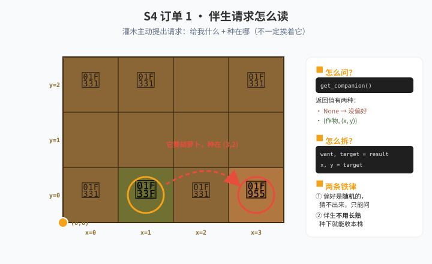

🎮 游戏进度 · 这一关解锁什么
📌 课前在游戏里做这些事
- 解锁 混种（Polyculture）——需要攒够胡萝卜才能解锁。
- 在草、灌木、树、胡萝卜这 4 种作物旁边试种不同作物，看产量数字有什么变化。
- 注意：南瓜、向日葵、仙人掌不吃伴生这套，只有草/灌木/树/胡萝卜参与。
- 解锁 水（Items.Water）——伴生加成基础上再浇水，产量还能再翻。
- 记一条关键规则：伴生作物不需要长熟，只要收获时它在那儿就行。
📖 知识卡 · 5 张
① 元组：把两个值打包成一组
列表用 [ ]，元组用 ( )。元组里的每一项也有下标，从 0 开始。
pos = (3, 5) # 一个元组：第 1 个是 3，第 2 个是 5
print(pos[0]) # 3
print(pos[1]) # 5
x, y = pos # 解包：一句话拆成两个变量
# x = 3, y = 5元组和列表最大的区别：元组一旦创建就不能改（游戏里基本都用元组，因为它更省事）。
② 字典：用"位置"查"要种什么"
列表是"按顺序排的一排"，字典是"按名字查"。字典的每个格子有两半：键（key）和值（value）。
companions = {} # 空字典
companions[(2, 1)] = Entities.Carrot # 键 = 坐标，值 = 要种的作物
companions[(0, 3)] = Entities.Bush
# 按键查值
want = companions[(2, 1)] # → Entities.Carrot
# 查在不在
if (2, 1) in companions:
...字典的键可以是元组——所以 (2, 1) 这种"坐标"能直接当键用，不需要先转成字符串。
③ get_companion()：怎么读它给的东西
站在任意一株参与混种的作物上调用它，会返回两种东西之一：
result = get_companion()
if result == None:
# 这株没有伴生偏好（或不是参与混种的作物）
...
else:
want, target = result # 第一层解包：want=作物，target=坐标
x, y = target # 第二层解包：坐标拆成 x 和 y
# 现在你知道：在 (x, y) 那格种 want关键：伴生偏好是随机的，每株都不一样，猜不出来——只能一株一株问。伴生在 3 格以内，而且不能跟自己是同一种。
④ 字典的三板斧：查 / 写 / 销账
companions = {}
# 查：这格有没有人在等伴生
if pos in companions:
want = companions[pos]
# 写：记下"我要 (x, y) 那格种 want"
companions[target] = want
# 销账：读出来同时删掉（pop = 取出来 + 删掉）
want = companions.pop(pos)pop() 一次干两件事：取出值 + 删掉这一条。混种里正好用它——一个伴生请求只会被满足一次。
⑤ def：把一整段动作打包成一个名字
字典方案要重复做两件事——"种一格"和"扫全田"。这两件事各写一次、反复调用，比复制粘贴清楚得多。
def plant_tile(crop): # 定义：给它起个名字
if can_harvest():
harvest()
if get_ground_type() != Grounds.Soil:
till()
plant(crop)
# 调用：括号里传什么，crop 就是什么
plant_tile(Entities.Tree)
plant_tile(Entities.Bush)为什么要函数？因为"种一格"这套动作要写很多遍。每写一遍可能改漏一处——改成函数后只改一个地方。
参数就是占位符：定义时写 crop，调用时才能决定种什么。
🚜 农场订单 · 闯关任务
问一株：读懂伴生请求

伴生作物不用等它长熟——种下去就能立刻收本株。这是很多人白等好几轮的原因。
字典记账：一次扫完全田
正确做法：用一个字典当"心愿单"。扫到每一格时—— ① 先看字典里有没有人点名要这格，有就种它要的； ② 没有才种主作物，然后问它想要什么，把请求记进字典。
整轮扫完，字典里会攒下一堆"谁要在哪种什么"的心愿——下一轮扫描时自动兑现。
为什么不能"走过去种完再走回来"？因为你种下伴生时，会把那格原来作物的心愿弄丢。用字典记账就不会互相踩。
🔧 常见报错 · 卡住了先看这里
TypeError: cannot unpack non-sequence → 解包层级搞错了。get_companion() 返回的是两层：先拆出 want, target，再从 target 拆出 x, y。
没有 None 判断直接解包 → 会报 TypeError。不是每株都有伴生偏好，必须先判 None。
伴生种下了但没加成 → 两种可能：伴生种的位置不对（坐标要照它给的来）；或者先收后种——伴生必须在收获之前就在那格。
胡萝卜伴生没生效 → 胡萝卜要种在翻过的土上。种之前先 till()。
KeyError → 用 companions[pos] 查一个字典里没有的键。要么先用 if pos in companions: 判断，要么用 pop()（它对不存在的键也不会报错，但这里还是先判断更清楚）。
产量还是 5 倍没有叠加 → 混种等级没升。每升一级混种，倍率翻倍（5 → 10 → 20…），要拿胡萝卜去升级。
🚪 自查门
🧠 换需求测试 · 真会了才过
- 换主作物：把字典方案里的主作物从树换成灌木或胡萝卜，代码要改几处？
- 换伴生规则：改成"自己种什么就把心愿写在自己这格"，行不行？会出什么问题？
- 两个作物抢同一格：如果两株植物请求同一格，你的字典会怎样？该加什么判断？
- 口述题：为什么伴生作物不用长熟也能加收益？这件事在代码里体现在哪？
📌 老师注记混种是第一个"规则由程序告诉你"的关卡——偏好随机，学生没法推导，只能调 API 读。
这正好引出字典：坐标当键、作物当值，把"谁要什么"这类"配对关系"存下来。字典是列表的自然升级——S3 存"一排数据"，S4 存"对应关系"。
字典那三个操作（in / []= / pop()）学生一次记不住很正常，订单 2 必须写出来才算过。